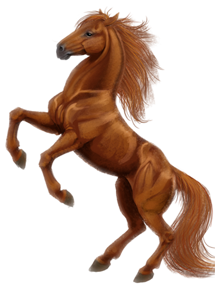
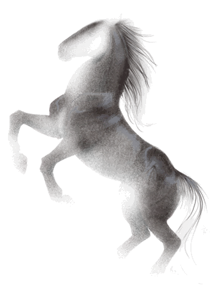
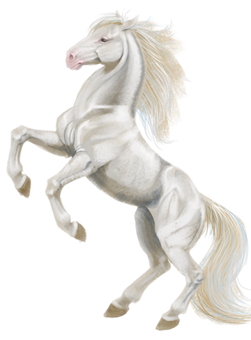
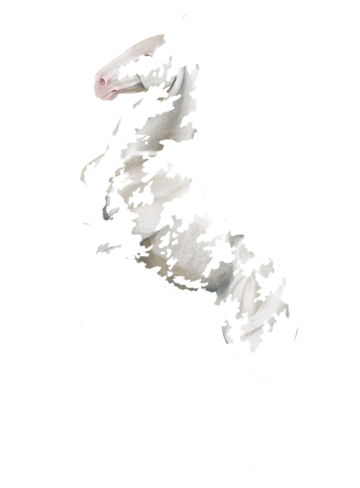
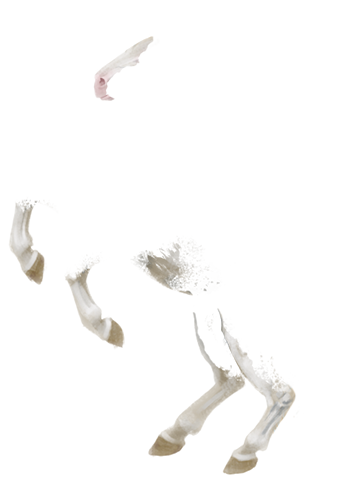

show help
Chestnut
Chestnut is one of the most common horse coat colors, seen in almost every breed. Chestnut consists of a red or brownish coat, with a mane and tail the same or lighter in color than the coat.

Loading